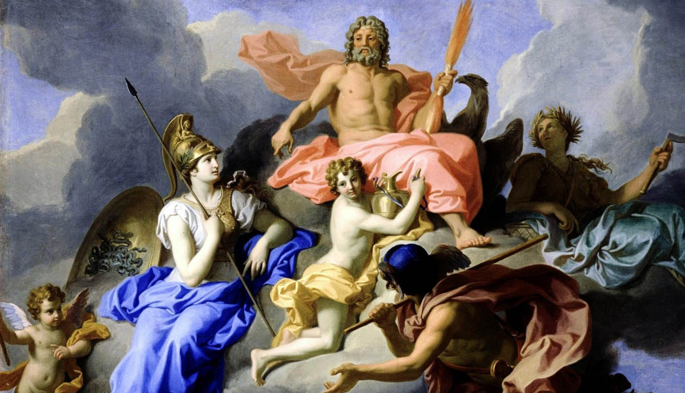

THE GREEK GODS
Download
B
efore knowing about the Greek gods and the Olympian gods
lets talk about how this all started In the very begging chaos ruled the
universe. It was full of nothingness. It was the dark void where nothing
existed. The dark nothingness forced Gaia the primordial goddess of earth to
come into existence. After being born seeing nothing she decided to make her
own home "earth" and submerged intoit Along with Gaia came Tartarus, “The primordial god of the pit" upon seeing the surrounding of the earth
he decided that the deepest parts of earth would be his home. After being
delighted with his new home he submerged into his home and became what would
later be called "the torturous hell of Tartarus. The third to emerge from
chaos was nix with black hair and two dark wings called "The primordial
goddess of night”. A moment later the last primordial emerged. He was covered
in shadows, a dark fog of nothingness he was Erebus "The primordial god of
darkness”. After seeing Erebus emergence nix glanced at him.
That glance was
what we mortal call love. As nix and Erebus were exploring their love Gaia felt
lonely and decided to give life on earth she gave birth to what we know as
Uranus "The primordial god of the sky”. After being born he flew up in the
air and made a dome that circled the earth it was called the sky after making
the sky he took a deep breath and blew out of this lungs came what we breathe
in the air. After being satisfied with his work he fused with the sky to look
over the earth. After that Gaya gave birth to these massive creatures that
reached out for the newly formed skis. They were the "Orion’s" The
last to be born from Gaia was Pontus "the primordial god of the sea “After
being born he took a deep breath and gushed out gallons and gallons of water
out of his mouth. After covering 36% of the ocean he stopped and made it his
house. At that time Erebus and nix were enjoying each other’s company and saw
the blue sky on top of their heads and got curious and decided to explore it.
The Monet they reached to the sky it went dark and tiny sparkles could be seen
from the surface. Nix and Erebus just brought forth the nigh to the sky and
darkness to the earth surface. At that time Erebus and nix gave birth to two
twins they were ether "the primordial go of light and humaria "the
primordial goddess of the day" after the twin being born the half of the
earth regained its color and gave the orange and yellow color eather and
humaria brought forth the day. As ether was enjoying the openness of the sky he
decided he would have his home at the peak of the sky, there he created a
barrier which divided the earth’s air and air above this point was air only for
the immortals. Form here he could shine his light upon all the other mortals who
are yet to come. Just like their parent’s ether and humaria had fallen in love
and gave birth to bilassa "the goddess of the sea" the counter part
of Pontus She would go one to fill earth with 36% water unknowing that Pontus
was doing the same. The water of the two seas collided. In the next moment
blilassa and Pontus. After meeting each other and having so much in common the
two merge into one giant ocean. After this Gaia was satisfied of her creations.
After all this had ended it began the era of the green gods.

The Titans:
1) Cronus
the Titan
god of the harvest. Cronus, although the
youngest of the first twelve Titans, became the ruler of the world after
overthrowing his father, Uranus. He then married his older sister, Rhea.
2) Rhea
the Titan
goddess of fertility and generation.Rhea determines the
flow of things and her name literally means “the one that flows” in Greek.
Later she married and mated with Cronus.
3) Oceanus
the Titan
god of the oceans. Oceanus was the
eldest son of Uranus and Gaia. His dominion extended in every corner of the
Earth and all parts of the horizon. Oceanus was the personification of water
and he paired with his sister, the Titaness Tethys.
4) Tethys
the Titan
goddess of the rivers and fresh water. Tethys was the wife
of Oceanus and the mother of more than 3000 River gods (rivers personified by
the Ancient Greeks), the Oceanside (nymphs of springs, streams and fountains)
and the Nephelai (nymphs of clouds).
5) Hyperion
the
Titan god of light.Hyperion's dazzling
light shone in all directions. His name means “the one who goes above the
earth” in Greek. He symbolized eternal splendor. He fell in love with his
sister, the Titan goddess Theia.
6) Theia
the Titan
goddess of the aether.Theia bore the Titan
Hyperion three shining children: Helios (the Sun), Eos (the Dawn), and Selene
(the Moon).
7) Prometheus
the
titan god of firePrometheus, in Greek
religion, one of the Titans, the supreme trickster, and a god of fire. He stole
the fire from gods and gave it to mankind. His intellectual side was emphasized
by the apparent meaning of his name, Forethinker.It was believed that he could
see into the future. In common belief he developed into a master craftsman, and
in this connection he was associated with fire and the creation of mortals.
8) Iapetus
the Titan
god of mortal life. He was symbolizing mortality and the mortal life-span. He fathered the
Titans Atlas (who was responsible for bearing the weight of the heavens on his
shoulders), Prometheus (who gifted fire to men) and Epimetheus (who married
Pandora, the first mortal woman). Iapetus was also considered the
personification of one of the four pillars that hold the heavens and the earth
apart.
9) Crius
the Titan
god of constellations.Crius was one of the
Titans, children of Uranus and Gaia. As the least individualized among the
Titans, he was overthrown in the Titanomachy. Crius name in Greek means “ram”
and it shows his connection with the constellation Aries.
10) Coeus
the Titan
god of intellect. He was also
considered the embodiment of the celestial axis around which the heavens
revolve. He married his sister, Phoebe.
11) Phoebe
the Titan
goddess of prophecy and oracular intellect.Phoebe
bore the Titan Coeus two children, Leto and Asteria. The Titaness Leto later
copulated with the Olympian god Zeus and bore the Olympians Artemis and Apollo.
Given that Phoebe symbolized prophetic wisdom just
as Coeus represented rational intelligence, the couple may have possibly
functioned together as the primal font of all knowledge in the cosmos.
12) Hems
the Titan
goddess of divine law and order.She is described as
"the Lady of good counsel," She also had the ability to predict the
future and thus, she later became one of the Oracles in Delphi.
13) Mnemosyne
the
Titan goddess of memory.Mnemosyne was
generally regarded as the personification of memory and remembrance. Later,
Zeus slept with Mnemosyne for nine consecutive days, eventually leading to the
birth of the nine Muses.
After these twelve Titan Gods came
The Olympian Gods
1) God Zeus
Zeus was recognized
as the father of gods and humans. He regulated the
celestial phenomena and
defined the laws that govern people. He held
the lightning bolt with one hand
and the scepter with the other, which
had an eagle at the top. He was known as
the ‘Lord of Justice’. People
respected and feared him at the same time. He was
taking care of the
families, keeping vigil in the home of every mortal and
protecting
strangers and passers-by from evil. Zeus' wife was the goddess Hera,
to
whom he was not always faithful. Greek mythology is full of love stories
about Zeus and him having intercourse with random women’s, he liked to
transform himself into anything he could think of and mingle with other
goddesses or mortals.
2) Goddess Demete
Demeter was the Greek
goddess of agriculture and protected the trees, plants
and grains. She was the
first to make the earth fruitful and taught people how to grow wheat, barley
and other plants. Demeter is somewhat isolated from the twelve gods in ancient
myths and this is because she is an even more ancient goddess herself. The
Greeks received her cult from the Pelasgians, who originally lived in Greece. According
to Greek mythology, Demeter’s daughter is mentioned as Persephone, who was once
abducted by God Hades and became his wife. The most sacred and secret religious
rites of ancient Greece, the Eleusinian mysteries, were held in honor of
Demeter.
3) God Poseidon
Poseidon was one of
the six children of Cronus and Rhea and brother of Zeus. He was allotted the
kingdom of the sea but he was also considered the god of horses and
earthquakes. This is why he was called “the earth shaker”. He rarely lived on Olympus,
preferring the depths of the ocean.He was sitting on a famous chariot drawn by
immortal horses and holding in his hand the famous trident, forged by the
Cyclops. When Poseidon was angry, he plunged the trident into the sea and shook
it whole from end to end. The sailors prayed to Poseidon so that he spares them
from his wrath.
4) God Hades
Hades was the brother
of Zeus and Poseidon and the god of the Underworld. He was allotted this
kingdom when the three brothers took a draw to decide who will take each of
three (heavens, sea and the Underworld). He liked to live in the dark and
shadowed world of the dead and was rarely seen on Olympus. He was also known as
Pluto. They actually preferred to call him Pluto because the name Hadeswas
another name for the Underworld and they did not like the idea of death. The entrance to the Underworld is guarded by a monstrous dog, Hades’ favorite pet, the three-headed Cerberus. In order for your soul to cross the silent river,
you need to pay the ferryman, Charon, to carry you to the other side on his
boat.
5) Goddess Hera
Goddess Hera was the
sister of Zeus, daughter of the Titans Cronus and
Rhea, and at the same time
Zeus’ wife. Hera symbolized and protected the
sacred institution of marriage.
She blessed and helped the women in labor.
Greek mythology presents Hera as a
modest, measured and faithful woman,
but at the same time very jealous. There
are almost no myths that refer
exclusively to Hera. Her name is almost always
associated with the myths
about Zeus. However, Hera does not present herself as
a goddess submissive
to her sovereign husband. She had a strong female
personality and she was
the only one that dared to object to him.
6) God Apollo
Apollo and Artemis
were siblings, twins actually, children of Zeus and Leto,
a Titan goddess.
According to tradition, the two children were born on the island of Delos.
Apollo is one of the most important and complex Greek gods. He is the god of light, music and poetry, healing and prophecy. He was the one that established
the great Oracle of Delphi, which was considered the center of the ancient
world. He was the teacher of the nine Muses and when they sang he accompanied
them with his famous lyre.
7) Goddess Artemis
Artemis Apollo's twin sister, was the goddess of hunting,
wild animals and the wilderness. She spent her time in the woods, accompanied
by the Nymphs, hunting,with her bow and primary goddesses of childbirth and
midwifery, relieving the women in labor from diseases. She was sometimes
associated with the goddess of the moon.
8)Goddess Aphrodite
Aphrodite, the most
beautiful among mortals and immortals, was born
from the foam of the sea when
Uranus’ blood fell on it after his defeat
by Cronus. This fact makes her the
eldest among the Olympian Gods.
Her name literally means “risen from the foam”.
Aphrodite was
worshipped as the goddess of beauty and passion. She could
inspire
love in the hearts of men and women. Most myths generally present
Aphrodite as a vengeful woman. Aphrodite was worshiped in all parts
of Greece
and many priestesses were serving her. According to Greek
mythology, she
married the god of fire and blacksmiths, Hephaestus,
but she was in love with
the god of war, Ares, with whom she bared many children among which the winged
god of love, Eros.
9) God Ares
Ares, the god of war,
was the son of the Greek gods Zeus and Hera. He was always followed by two of
his faithful sons and followers, the gods Deimos and Phobos. Ares was handsome
and strong, young and well-armed. He loved war and battles so he was hated by
people and his worship was limited. Only in Sparta he was particularly
worshipped and had a statue dedicated to him. Ares was tried, according to
tradition, for his many war crimes, in one of Athens’ hills, the Areopagus
Hill, which later became the seat of the criminal court of ancient Athens.
10) God Hephaestus
Hephaestus was the
god of fire and blacksmiths. He was born ugly and that is why his mother, the
goddess Hera, unable to nourish him, threw him out of Olympus. Since then he
has been limping. Hephaestus fell into the sea, where he was picked up by the Nereids and raised by them. Growing up, he became a famous craftsman and set up
his workshop on Mount Etna in Sicily. With his various metals, he made works of
art of incomparable beauty. He once made a golden throne and sent it to his
mother Hera. As soon as Hera sat down, invisible chains bound her without
anyone being able to untie them. They tried to persuade Hephaestus, but they only succeeded after they got him drunk first. It was from him, that the Titan
Prometheus took the fire and gave it to the people.
11) God Hermes
Hermes was the god of
wealth, trade, thieves and travelers. He was also known as the Messenger God,
being the herald of the Olympians and carrying messages between them. He was
the son of Zeus and Maia, daughter of Titan Atlas. He was a clever, inventive
and arrogant god. As soon as he was born, Hermes saw a turtle. He took her
shell, placed seven strings in it and invented the lyre. He once stole the oxen
guarded by god Apollo and locked them in a cave. He wouldn’t admit the theft,
but in the end, he confessed. To avoid punishment, he gifted the lyre to
Apollo. Hermes wore winged sandals and held the caduceus, his wand which had
two serpents twined around it. He was the one who accompanied the souls of the
dead to Hades and for that, he was known as the “soul-bearer”.
12) Goddess Athena
Athena, according to
Greek mythology, was the goddess of wisdom and strategic warfare. Athena was
the beloved daughter of Zeus. Her mother was the Titaness Metis, the first wife
of Zeus. Zeus received a prophecy informing him that Metis would give birth to
the child who would overthrow his father. To escape the prophecy, Zeus
swallowed Metis while she was pregnant in Athena. Later, Zeus began to suffer
from headaches and called on Hephaestus to help him. Hephaestus hit the head of
Zeus with his hammer and Athena sprang out in full armor. She is always
pictured to be armed, never as a child, always a virgin. She won the battle for
the patronage of Athens over Poseidon. The Parthenon in Athens is the most
famous temple dedicated to her. Protector of heroes and wisest among the Gods,
Athena was considered one of the most powerful and important Olympian Gods.
13) God Dionysus
Although a demi-god,
Dionysus managed to win the heart of the gods and his place on Mount Olympus!
As a god of wine, viticulture ritual madness and religious ecstasy, he was very
beloved among the people and was considered a very important god. He was the
son of god Zeus and the mortal Semele. He was the patron god of theater and
taught people how to make wine. The Athenians, to honor Dionysus, held a famous
celebration, characteristic of his merriment. Any use of force was prohibited
during such holidays.
14) Goddess Hestia
Hestia was the
goddess of domestic life, home and hearth, the flame that kept a family’s home
warm. She was the eldest daughter of Cronus and Rhea, and the eldest sister of
Zeus. In the middle of the ancient Greeks’ home, there was an altar in her
honor. The women of the house had as a responsibility to keep Hestia’s flame
burning. The worship of Hestia was connected with the worship of Zeus who
protected the strangers-travelers. Goddess Hestia was the first to invent the
construction of houses, taught it to people and became the protector of family
peace and happiness. She was always staying on Mount Olympus, keeping the
sacred flame going.
The Greek Gods
The Titans
The Olympian Gods